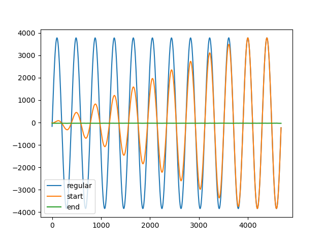

Ramping Example
In this example we ramp up the amplitude of our signal over 10 periods and we retrieve the first 12 periods of samples. Then after a wait we receive the next 12 periods. Afterwards we trigger the ramp down of the signal. As this is triggered by a command that is sent over the network it varies when the ramp down actually start. A ramp down can be triggered at a specific point with the help of a sequence.
To run this example connect the RedPitaya in the following way.

It is also possible to update the signal type during the acquisition without going back to the CONFIGURATION mode.
Julia Client
This and all other examples are located in the examples directory
using RedPitayaDAQServer
using PyPlot
# obtain the URL of the RedPitaya
include("config.jl")
rp = RedPitaya(URLs[1])
serverMode!(rp, CONFIGURATION)
dec = 32
modulus = 12480
base_frequency = 125000000
samples_per_period = div(modulus, dec)
periods_per_frame = 2
decimation!(rp, dec)
samplesPerPeriod!(rp, samples_per_period)
periodsPerFrame!(rp, periods_per_frame)
triggerMode!(rp, INTERNAL)
frequencyDAC!(rp, 1, 1, base_frequency / modulus)
signalTypeDAC!(rp, 1 , 1, SINE)
amplitudeDAC!(rp, 1, 1, 0.5)
offsetDAC!(rp, 1, 0)
phaseDAC!(rp, 1, 1, 0.0)
# Ramping
# Ramping commands can be specified for each channel individually
enableRamping!(rp, 1, true)
rampingDAC!(rp, 1, 10/(base_frequency/modulus)) # Ramp for 10 Periods = 5 Frames
# Start signal generation + acquisition
# Ramp Up starts with trigger start
serverMode!(rp, ACQUISITION)
masterTrigger!(rp, true)
uFirstPeriod = readFrames(rp, 0, 6)
fr = currentFrame(rp)
uCurrentPeriod = readFrames(rp, fr, 6)
# Start ramp down asynchronously
# Note that we might not see the actual ramping in this example, see seqRamping.jl for that
enableRampDown!(rp, 1, true)
uLastPeriod = readFrames(rp, currentFrame(rp), 6)
# Resetting the trigger also removes the ramp down flag
masterTrigger!(rp, false)
serverMode!(rp, CONFIGURATION)
enableRamping!(rp, 1, false)
figure(1)
clf()
# Frame dimensions are [samples, chan, periods, frames]
plot(vec(uCurrentPeriod[:,1,:,:]))
plot(vec(uFirstPeriod[:,1,:,:]))
plot(vec(uLastPeriod[:,1,:,:]))
legend(("regular", "start", "end"))
savefig("images/asyncRamping.png")